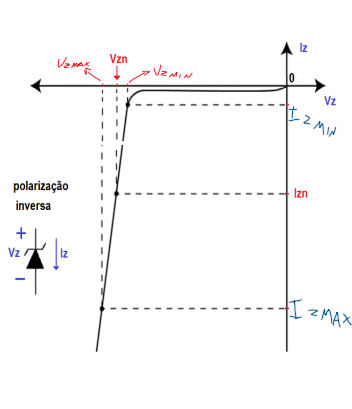

O diodo Zener é um componente eletrônico muito utilizado em circuitos que precisam manter uma tensão constante. Ele é projetado especialmente para operar no sentido reverso, controlando a tensão de forma precisa e segura.
Sabemos que um diodo comum de silício, quando conduz, apresenta uma queda de tensão em torno de 0,7 V. Assim, se colocássemos vários diodos em série, poderíamos somar essas quedas e obter uma tensão aproximadamente constante.
Por exemplo, se colocarmos 17 diodos em série:
17 × 0,7 V = 11,9 V.
Isso até funciona, mas é totalmente impraticável na maioria dos circuitos — ocuparia muito espaço e seria difícil de controlar.
Diodo Zener:
Para resolver esse problema, existe o diodo Zener.
Ele é fabricado de maneira diferente dos diodos comuns, com uma junção P-N altamente dopada,
permitindo que ele conduza corrente elétrica mesmo quando está polarizado inversamente — ou seja, com o catodo ligado ao positivo e o anodo ao negativo.
O ponto mais importante é que, quando a tensão inversa atinge um certo valor (chamado de tensão Zener – Vz), o diodo começa a conduzir e mantém essa tensão praticamente constante, mesmo que a corrente varie dentro de certos limites.
• Quando está polarizado diretamente, o diodo Zener se comporta como um diodo comum, com queda de tensão de aproximadamente 0,7 V.
• Quando está polarizado inversamente, ele bloqueia a corrente até a tensão atingir o valor Vz.
A partir desse ponto, o diodo conduz e mantém a tensão constante em seus terminais.
Essa característica faz com que o Zener seja muito usado como regulador de tensão — protegendo circuitos contra variações na alimentação.
A curva característica mostra a relação entre a corrente (I) e a tensão (V) no diodo Zener.
Na polarização direta (eixo positivo de V e I), o Zener se comporta como um diodo comum, com uma queda de aproximadamente 0,7V. Na polarização inversa (eixo negativo de V e I), o diodo bloqueia a corrente até que a tensão atinja a tensão Zener (Vz). A partir desse ponto, mesmo com variações significativas na corrente reversa (Iz), a tensão sobre o diodo permanece praticamente constante em Vz, o que o torna ideal para aplicações de regulagem de tensão. É importante notar os limites de corrente, como Izmax, para evitar danos ao componente.
Para o Zener funcionar corretamente, ele deve sempre ser utilizado com um resistor em série (Rs). Esse resistor é responsável por limitar a corrente que passa pelo diodo, garantindo que ela permaneça dentro dos valores seguros.
As condições de funcionamento são:
• A tensão da fonte (Vf) deve ser maior que a tensão Zener (Vz).
• O resistor deve limitar a corrente, evitando que o Zener seja danificado.
Assim, o diodo Zener mantém a tensão de saída estável, enquanto o resistor “absorve” as variações de corrente.
Suponha um diodo Zener 1N4733A, com tensão nominal Vz = 5,1 V. Se a fonte de alimentação fornece Vf = 12 V e o resistor de série é de Rs = 330 Ω, podemos calcular a corrente que passa pelo Zener:
Iz = (Vf – Vz) / Rs
Iz = (12 – 5,1) / 330
Iz ≈ 0,021 A = 21 mA
Essa corrente está dentro de uma faixa segura, garantindo que o diodo mantenha sua tensão constante em 5,1 V. Se diminuíssemos o valor do resistor, a corrente aumentaria — e o Zener poderia superaquecer.
Todo diodo Zener possui uma corrente mínima (Izmin) e uma corrente máxima (Izmax). Dentro dessa faixa, ele consegue regular a tensão corretamente.
Se a corrente for menor que Izmin, a tensão deixa de ser constante. Se for maior que Izmax, o componente aquece e pode se danificar.
A potência dissipada pelo Zener é dada por: \[\huge P_z = V_z \cdot I_z \]
Por exemplo, para Vz = 5,1 V e Iz = 21 mA:
Pz = 5,1 × 0,021 = 0,107 W
Isso significa que um Zener de 0,5 W suportaria essa potência com segurança.
O resistor Rs é essencial para garantir o funcionamento correto do circuito. Ele deve ser calculado de forma que a corrente pelo Zener nunca ultrapasse o limite especificado no datasheet.
Primeiro, calculamos a corrente máxima permitida:
Izmax = Pzmax / Vz
Sabendo isso, podemos determinar o menor valor de resistor que mantém o diodo dentro da faixa segura:
Rsmin = (Vf – Vz) / Izmax
Dessa forma, mesmo que a tensão da fonte varie, o Zener continuará regulando sem exceder sua potência máxima.
• O diodo Zener é usado para estabilizar tensões em circuitos eletrônicos.
• Quando polarizado reversamente, ele mantém a tensão constante igual à sua tensão nominal (Vz).
• É obrigatório o uso de um resistor em série (Rs) para limitar a corrente.
• A potência dissipada deve sempre ser menor que a potência máxima (Pzmax) especificada.
• O Zener é a base de muitos circuitos reguladores e fontes de tensão fixa.